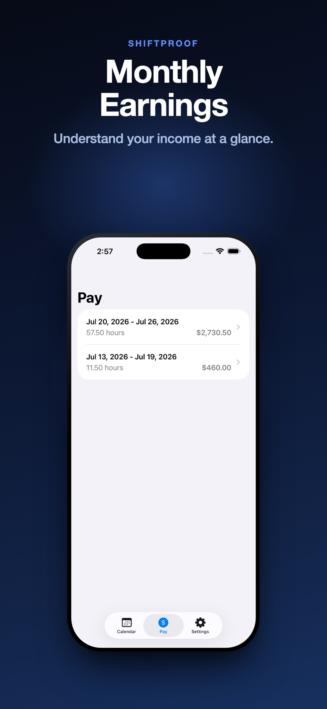

A pay period is the block of time a single paycheck covers. It sounds simple until your pay dates seem to shift, or a month suddenly has three paychecks instead of two — which is exactly when it's worth understanding which schedule you're actually on.
Twenty-six biweekly periods don't divide evenly into twelve months — 26 × 2 weeks is 364 days, one short of a full year, and most months contain more than two 14-day blocks' worth of days. The result is that, on a biweekly schedule, two months a year end up containing three pay dates instead of the usual two. It isn't an extra payment — it's the same annual total, just distributed across more paychecks in those particular months. Knowing this ahead of time avoids the surprise (and the temptation to budget as if it will happen every month).
Because semimonthly pay is tied to fixed calendar dates rather than a fixed number of days, each period's length depends on how many days are in that half of the month. A 1st–15th period is always 15 days; a 16th–end-of-month period is 13, 14, 15, or 16 days depending on the month and leap year. If you're estimating gross pay from a hypothetical example, that period-length variation is worth accounting for — it's not a payroll error, it's how the calendar falls.
Overtime under the FLSA is calculated per workweek — a fixed, recurring 7-day period — not per pay period. On a biweekly schedule, that means two separate workweeks live inside one pay period, and overtime is calculated for each of those two weeks independently, then both totals land on the same check. Adding up all the hours across the full two-week period and applying one overtime threshold to the whole thing is the wrong math, even though it's an easy mistake to make when eyeballing a biweekly stub. See our guide to weekly overtime for how that split actually works.
Here's what two consecutive weekly-equivalent totals look like for the same schedule, shown the way ShiftProof's pay history displays them:
Each period is totaled on its own — including its own weekly overtime split — rather than blended together, which keeps the math traceable back to the actual shifts and week in question.

Your employee handbook, offer letter, or payroll portal will state your pay schedule explicitly — it's worth confirming rather than assuming, since biweekly and semimonthly are easy to mix up and produce meaningfully different period lengths and overtime math.
ShiftProof groups your shifts into pay periods automatically based on the schedule you set, and calculates weekly overtime correctly within each one — including biweekly periods that span two separate workweeks. Your pay history shows each period's expected gross pay on its own, the same way a real paycheck does.
Set your pay schedule once. Every period totaled correctly, every time.
Download ShiftProof FreeThis guide is general information, not legal or payroll advice. Pay schedules and overtime rules vary by employer and by state — verify specifics with your employer or payroll department.